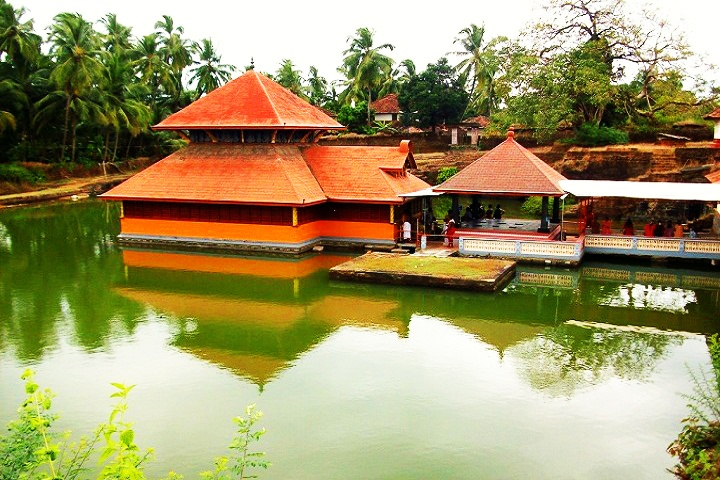
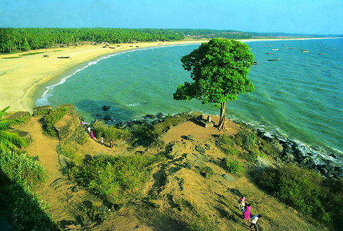
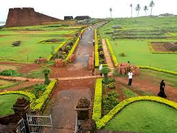
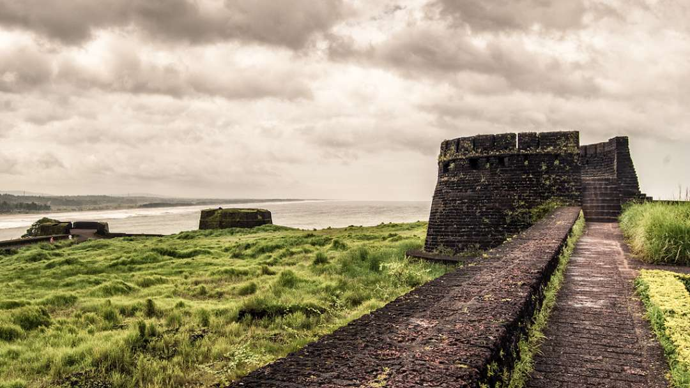
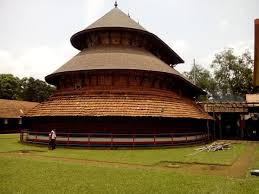
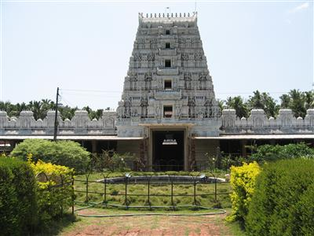
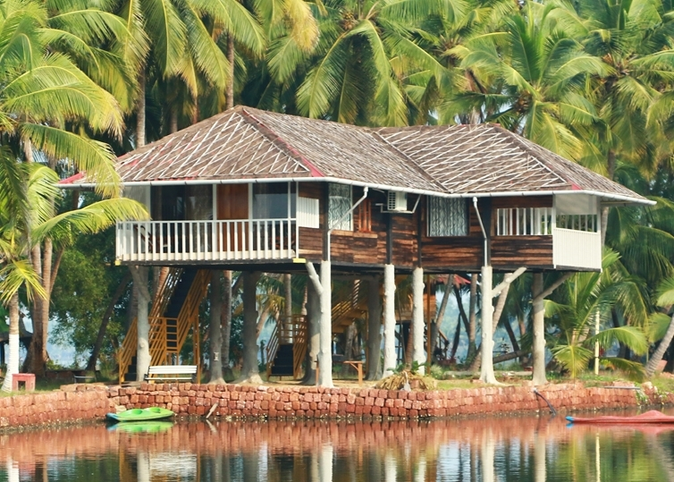

Home
(current)
Explore
Districts
Adventure
Holiday Packages
Cusines
Heritage
The Wild
Reviews
Destination
WaterFalls
Beaches
Museum
Contact Us
Sign In
Search
KASARGOD
Kasargod, the land of seven languages and several cultures. The place of harmonious coexistence of Hindu, Muslim, Christian religions. The district has famous tourist centres, including the international fame BEKAL FORT & BEACH. There are also places which can be converted to attract the tourists. Kasaragod is known as the Land of Gods, Forts, Rivers, Beautiful hills and lengthy sandy beaches. visit to these places evoke enthralling moments to the visitors.
How to Reach:
Bus
NH17 passes through the Kasaragod district. One can reach the district easily from Kannur side as it enters the district at Kalikadavu. The highway passes through the main towns such as Kanhangad (28km), Kumbla (14km) and then enters Karnataka state at Thalappadi (35km) and reaches Mangalore (55km).
Train
One can also access the district via railways as Railway line passes equivalent to the coastal line. The major Railway stations near the district include Trikaripur, Cheruvathur, Nileshwar, Kanhangad, Kasargod, Kumbla,
Flight
As such there is no airport in Kasargod District but the nearest airport is in Mangalore is almost 70 kilometers away. Other airports are in Kozhikode (Calicut), almost 200 kilometers and Kochi (Cochin) at 350 kilometers.
Places to Visit
Mahalingeswara Temple Adoor:
ADOOR 45 KMs east of Kasargod town. Famous for its ancient Siva Temple belonged to have been founded by Arjuna. The place where the Kiratha Yuddham battle between Arjuna and Lord Siva took place according to legend.
Bekal Fort:
The largest and best preserved fort in the State. The alluring scene of the sea shore and its exhilarating natural scenery and beauty attracts the visitors. Fast emerging as an International tourist centre
Bela Fort:
BELA CHURCH Our Lady of Sorrows Church – oldest in the district constructed in 1890 AD. 15 KM north of Kasargod. This Gothic style Roman Catholic church which is under the Manglore Diocese, has celebrated its centenary recently and also renovated.
Edneer mutt:
It is 10 Km. North East of Kasargod. This Mutt belongs to the Sankaracharya tradition, presently renowned as a seat of art and learning.
Things to do
Theyyam:
Theyyam is one of the folk arts in North Kerala. Theyyam is believed to be Dravidian. From Payangadi river to north it is known as Kaliyattam and from Payangadi to Valapattanam,it is known as theyyam for very little variety.
Site Seeing:
fair share of attractive beaches, forts, wildlife sanctuaries, trekking trails and other places of importance.
Boat ride:
Enjoy being toppled over with the sudden turn. Feel the joy of floating and head back refreshed.
Gallery






